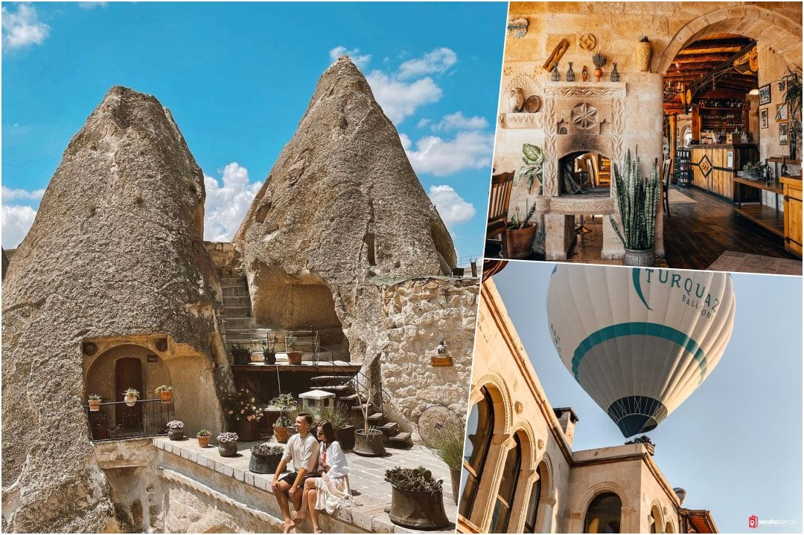

EN İYİ KAPADOKYA OTELLERİ
Türkiye’nin eşsiz güzelliklerinden biri olan Kapadokya, dünya tarafından oldukça sık ziyaret edilen bir turizm merkezi. Bu eşsiz güzellikteki topraklarda harika bir tatil geçirmek için sizlere konaklayabileceğiniz birbirinden güzel taş butik oteller ve her şey dahil otelleri ile en iyi Kapadokya otelleri sıralıyoruz.
Museum Hotel
Kapadokya’da son derece lüks ve eşsiz bir tasarıma sahip olan bu otel gerek manzarası gerek ise tasarımı ile konuklarını büyülüyor. Sabahın erken saatlerinde peri bacaları ve balon manzarasının sizi karşıladığı bu otelde akşam ise harika bir manzarada yemeğinizi yiyebilirsiniz.
Otelin gecelik ücreti ise 5.000 TL’dir.
Museum Hotel Web Sitesi İçin Tıklayınız
Taşkonak Hotel
1885’ten kalma ve tamamen oyma taşların içerisinde harika ve otantik bir Kapadokya oteli geçirmek için bu otel tam da sizlere ve sevdiklerinize göre olacak.
Otelin gecelik ücreti ise 4.000 TL’dir.
Taşkonak Hotel Web Sitesi İçin Tıklayınız
Sacred House
Grand Son derece görkemli tasarımı ve birbirinden farklı oda çeşitleri ile Sacred House, konuklarını kendisine hayran bırakıyor. Spası, dinlenme salonları ve kapalı yüzme havuzu ile misafirlerinden tam puan alıyor.
Otelin gecelik ücreti ise 2.000 TL olarak belirlenmiş.Otelin gecelik fiyatı 2 kişi için 1.550 TL ile 2.700 TL arasında değişiyor.
Sacred House Web Sitesi İçin Tıklayınız
Argos in Cappadocia
Uçhisar’ da son derece lüks bir mağara otel olan Argos, mini barı ve şarap mahzeni ile konuklarını kendine hayran bırakıyor. Aynı zamanda farklı tasarımda odaları ile de harika bir tatil imkânı sunuyor.
Otelin gecelik ücreti ise 3.000 TL’dir..
Argos in Cappadocia Web Sitesi İçin Tıklayınız
Cappadocia Caves Hotel
KNevşehir Uçhisar’ da ve tam peribacalarının içerisinde yer alan ve tamamen otantik taşlardan inşa edilmiş bu otel sizler için mükemmel bir seçim olacak. Sabahın erken saatlerinde kalktığınızda ise eşsiz bir balon manzarası sizleri bekliyor olacak. Otelin gecelik ücreti ise 600 TL olarak belirlenmiş.
Cappodocia Caves Hotel Web Sitesi İçin Tıklayınız
Ottoman Cave Suites
Konuklarının yüksek puanlar vererek ayrıldığı bu otelde harika bir manzara eşliğinde kahvaltınızı yapabilirsiniz.
Yılın her dönemi onlarca turistin ziyaret ettiği bu otelin gecelik ücreti ise 700 TL’dir.
Ottoman Cave Suites Web Sitesi İçin Tıklayınız
Kelebek Special Cave Hotel
Kapadokya’nın bir diğer mağara otellerinden olan bu otel eşsiz vadi manzarası, restoranı ve açık havuz imkânı ile sizlere eşsiz bir tatil yapma şansı sunuyor.
Rustik tarzda döşenmiş odaları ile gecelik ücreti 1.350 TL olarak belirlenmiş.
Kelebek Special Cave Hotel Web Sitesi İçin Tıklayınız
Rox Cappadocia
Bu sevimli ve şirin butik otel pek çok ödül almış ve eşsiz manzarası ile de konuklarını büyülemeye devam etmektedir. Balayı oteli olarak da tercih edebileceğiniz bu otel sizler için harika bir tatil sunuyor.
Gecelik ücreti ise 1700 TL civarında olan bu şirin otelin fiyatları değişebilmektedir.
Rox Cappadocia Web Sitesi İçin Tıklayınız
Göreme Kaya Otel
Eşsiz dağ manzarası ve birbirinden lezzetli yemekleri ile oldukça tercih edilen bu otelin gecelik ücreti 750 TL olarak belirlenmiş. Son derece konforlu ve lezzetli yemeklere sahip olan bu otelde keyifli vakit geçireceksiniz.
Göreme Kaya Otel Web Sitesi İçin Tıklayınız